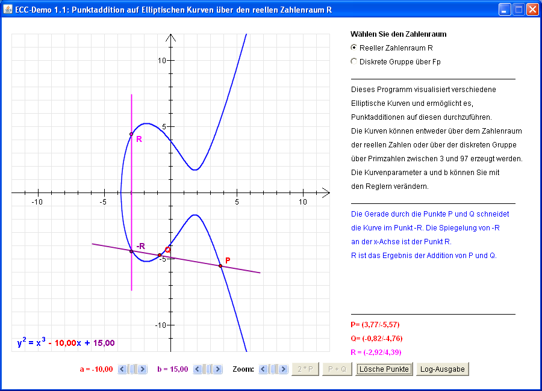

Dieses Programm visualisiert verschiedene Elliptische Kurven und ermöglicht es, Punktadditionen auf diesen durchzuführen.
Die Kurven können entweder über dem Zahlenraum der reellen Zahlen oder über der diskreten Gruppe über Primzahlen zwischen 3 und 97 erzeugt werden.
Wenn Sie das nicht-modale Fenster mit den Log-Ausgaben öffnen, können Sie Ihre Aktionen (z.B. fortgesetzte Additionen) parallel verfolgen.
Bemerkung Nachfolgeversion Java-CrypTool (JCT):
Mit JCT können nicht nur
1. Kurven über den reellen Zahlen, und
2. Kurven in dem Körper F(p), sondern auch
3. Kurven im Körper F(2^m)
berechnet und visualisiert werden.